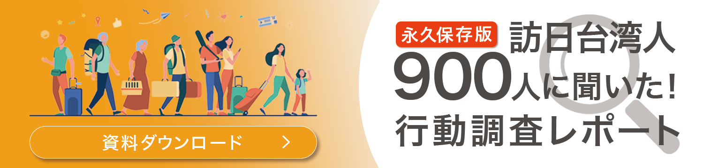

ホワイトペーパーバナー
制作時期：2024年1月
制作時間：5時間
使用ツール：Illustrator・Photoshop
クラウドワークスに応募しようと思い、制作したバナーです。
クライアントが用意したホワイトペーパーの資料の色味や雰囲気にしっかり寄せ、少し固い雰囲気でパワー
ポイント感や会議資料のような雰囲気で制作してみました。
一番強調したい“資料ダウンロード”のボタンは、思わず押したくなるデザインを意識しました。